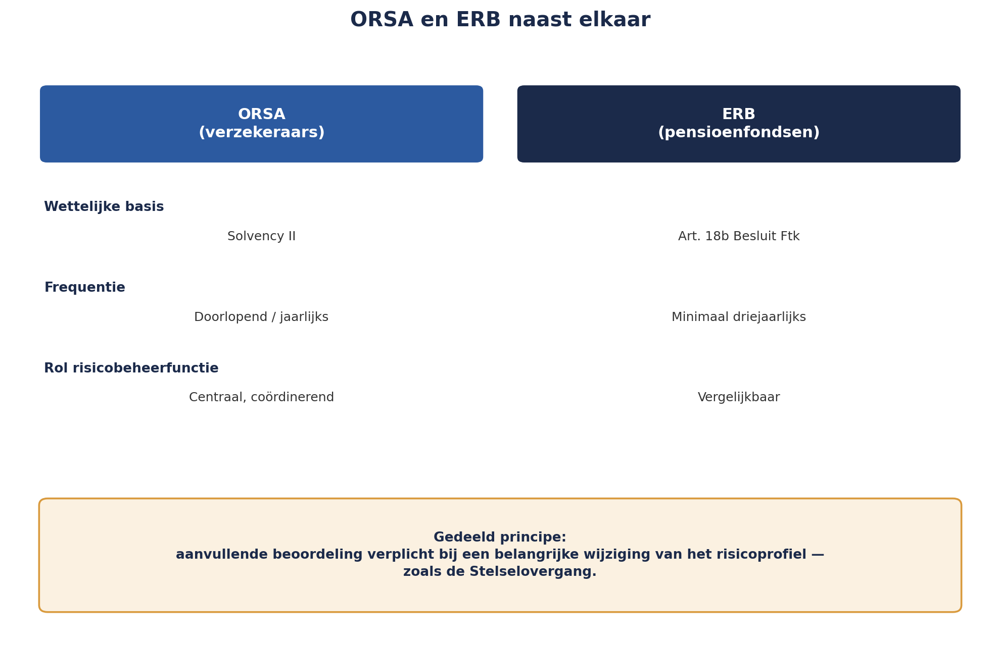

Deel 27 — Scenario’s, stresstesten, ORSA/ERB en modelrisico
Niveau 3 — Expert · Reader
27.0 Wat er in de 0,5% zit
Deel 26 eindigde met een onopgeloste vraag: Value at Risk zegt niets over wat er gebeurt in het resterende, kleine percentage scenario’s. Dit deel gaat over het instrumentarium dat die vraag wél beantwoordt — en over het jaarlijkse document waarin dat instrumentarium bij Meridiaan samenkomt: de ORSA.
27.1 Scenario-analyse versus stresstest
Twee technieken die vaak door elkaar worden gebruikt, maar een verschillend doel dienen.
Scenario-analyse onderzoekt een samenhangend, plausibel toekomstbeeld — bijvoorbeeld “wat gebeurt er met Meridiaan als de rente de komende drie jaar geleidelijk daalt en de levensverwachting sneller stijgt dan verwacht?” Een scenario vertelt een verhaal met meerdere, onderling consistente aannames.
Stresstesten isoleren doorgaans één of enkele variabelen en drijven die naar een extreme, maar nog steeds plausibele waarde — bijvoorbeeld “wat gebeurt er als de aandelenmarkt in één maand 30% daalt?” Een stresstest hoeft geen samenhangend verhaal te vertellen; hij test de gevoeligheid van het systeem voor één specifieke schok.
Beide technieken zijn nodig, en samen vullen ze precies de leemte die VaR openliet: waar VaR een kansverdeling samenvat tot één getal, laten scenario’s en stresstesten zien wát er concreet gebeurt in de staart die dat getal beschrijft.
27.2 De omgekeerde stresstest
Een normale stresstest begint bij een schok en vraagt naar het gevolg. De omgekeerde stresstest draait de vraag om: welk scenario zou Meridiaan daadwerkelijk laten omvallen — en hoe waarschijnlijk is dat scenario? Dit dwingt tot een fundamenteel andere denkoefening dan alle voorgaande technieken in deze cursus: in plaats van te vragen “hoe erg kan het worden”, vraagt de omgekeerde stresstest “wat zou ons breken, en zien we tekenen dat we die kant op bewegen?”
Voor Meridiaan levert de omgekeerde stresstest een ongemakkelijk maar waardevol scenario op: een combinatie van een langdurige uitval bij een kritieke externe partij (herkenbaar uit deel 25), samenvallend met een periode van verhoogde druk op de transitietijdlijn, zou de organisatie in een positie kunnen brengen waarin ze niet meer op eigen kracht een ordentelijk besluitvormingsproces kan garanderen — precies de adequaatheidseis uit de DNB good practice (deel 24). Onthoud dit scenario; het is geen toeval dat het hier voor het eerst wordt genoemd.
27.3 ORSA en ERB, naast elkaar
In deel 23 werden beide instrumenten al kort geïntroduceerd als tegenhangers van elkaar. Hier worden ze volledig uitgewerkt.
ORSA (Own Risk and Solvency Assessment), verplicht onder Solvency II voor verzekeraars zoals Meridiaan, is een doorlopend proces — niet een eenmalig document — waarin de verzekeraar haar eigen risicoprofiel beoordeelt in relatie tot haar strategie, en vaststelt of haar kapitaalpositie daarbij passend is, ook onder stress. De risicobeheerfunctie (Sanne’s rol) speelt hierin een centrale, coördinerende rol.
ERB (eigenrisicobeoordeling), verplicht onder artikel 18b Besluit Ftk voor pensioenfondsen, minstens eens per drie jaar, is de fondstegenhanger — inhoudelijk vergelijkbaar (eigen risico’s beoordelen in relatie tot de eigen situatie), maar met een lagere verplichte frequentie en een iets andere nadruk, passend bij het andere financieringskarakter van een pensioenfonds ten opzichte van een verzekeraar.
Voor de Stelselovergang is er een specifieke reden dat beide instrumenten relevanter zijn dan normaal: de ERB-verplichting benoemt uitdrukkelijk dat een fonds een aanvullende beoordeling moet doen bij een belangrijke wijziging van het risicoprofiel — en een stelselovergang is per definitie zo’n wijziging. Voor Meridiaans eigen ORSA geldt hetzelfde principe, ook al is dat niet in exact dezelfde wettelijke taal geformuleerd: een normale, jaarlijkse ORSA-cyclus is onvoldoende in een jaar waarin de organisatie een fundamentele transitie doorloopt.

27.4 Modelrisico en modelvalidatie
Een laatste, samenvattende laag: modelrisico is het risico dat een model zelf — los van de kwaliteit van de individuele aannames die deel 26 behandelde — systematisch verkeerde uitkomsten geeft, door een fout in de opzet, een verkeerde toepassing, of gebruik buiten het domein waarvoor het ontworpen is.
Modelvalidatie is het antwoord: een onafhankelijke toetsing van het model als geheel, uitgevoerd door iemand die het niet zelf heeft gebouwd (precies vraag 5 uit de vijf-vragen-set van deel 26). Dit is de derde-lijns-toepassing (deel 9 niveau 1, deel 21 niveau 2) op modellen specifiek: net zoals interne audit onafhankelijk het risicomanagementproces toetst, toetst modelvalidatie onafhankelijk of een model doet wat het beweert te doen.
Kernzin 20 van de cursus: een model dat nooit door iemand anders dan de bouwer is getoetst, draagt hetzelfde risico als een maatregel die nooit op werking is getoetst — het bestaat, maar niemand weet of het klopt.
Deze kernzin is bewust een echo van Kernzin 10 (deel 16, niveau 2) — hetzelfde onderliggende patroon (opzet zonder onafhankelijke bevestiging van werking), nu toegepast op het meest technische instrument in deze cursus.
27.5 Sanne’s ORSA-bijdrage voor de Stelselovergang
Met alle instrumenten uit dit deel samengebracht, stelt Sanne voor de eerstvolgende ORSA-cyclus een aanvullend hoofdstuk voor, specifiek gericht op de transitie: het omgekeerde-stresstest-scenario uit 27.2 (uitval kritieke externe partij tijdens verhoogde transitiedruk), getoetst tegen de meest recente modelvalidatie van de transitiemodellen (deel 26), met een expliciete uitspraak of Meridiaans huidige voorbereiding — inclusief het BCM-hiaat dat in deel 25 werd vastgesteld — voldoende is om dit scenario te doorstaan.
Het antwoord dat uit deze analyse naar voren komt, is ongemakkelijk: nee, nog niet. Dit wordt het scherpste punt in Sanne’s tweedelijnsopinie tot nu toe.
Samenvatting van deel 27
- Scenario-analyse onderzoekt een samenhangend toekomstbeeld; stresstesten isoleren de gevoeligheid voor één schok. Samen vullen ze de leemte die VaR openliet.
- De omgekeerde stresstest vraagt niet “hoe erg kan het worden” maar “wat zou ons breken, en bewegen we die kant op” — en levert voor Meridiaan een scenario op dat de rest van dit niveau blijft achtervolgen: een kritieke externe uitval tijdens verhoogde transitiedruk.
- ORSA (Solvency II, doorlopend/jaarlijks) en ERB (art. 18b Besluit Ftk, minimaal driejaarlijks) zijn tegenhangers met een gedeeld principe: een aanvullende beoordeling is verplicht bij een belangrijke wijziging van het risicoprofiel — zoals de Stelselovergang.
- Kernzin 20: een model dat nooit door iemand anders dan de bouwer is getoetst, draagt hetzelfde risico als een ongeteste maatregel — het bestaat, maar niemand weet of het klopt.
- Sanne’s ORSA-bijdrage combineert het omgekeerde-stresstest-scenario met het BCM-hiaat uit deel 25, en concludeert dat Meridiaan er nog niet klaar voor is.
Vooruitblik
Deel 28 behandelt wat er gebeurt als deze conclusie het bestuur niet overtuigt: mandaat versus invloed, de grens tussen legitiem-optimistisch en misleidend, de DNB-toets als ethische sneltest, en de vraag wanneer het wettelijke escalatiemiddel uit deel 23 daadwerkelijk wordt ingezet.